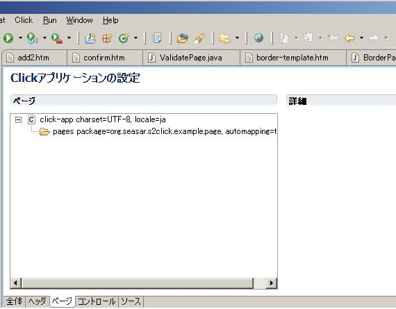
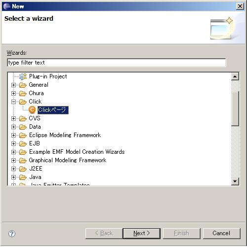
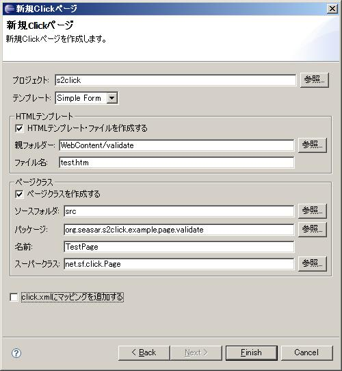

-
- Click Frameworkでは、「HTMファイル」と「JAVAファイル」がペアになり、画面を構成します。Clickでは、これらを自動的に関連させる機能があり、JAVAファイルに Suffixとして「Page」を付けることが出来ます。 S2Clickでは、この Page Suffixをもとに、Smart Deployで自動的にContainerに登録していますので、Clickでも自動、Seasarでも自動と新たに Pageを追加しても、設定変更の必要はありません（但し、Clickでは起動時に関連させるので、追加時の再起動は必要です。JAVAファイルの内容変更だけであれば、Hot Deploy機能が有効ですので再起動は原則不要です）
- Click では、これらの関連付け等の設定を、click.xmlで行います。Click-IDE Pluginをインストールしてあると、下記の様に判り易く表示されます

- また新しいページを追加する場合も下記の様に Wizard形式で簡単に、HTM ファイルとJAVA ファイルを同時に作成出来ます


- 今回のサンプルの画面の場合は、HTMファイルは概ね下記の様に、自動生成されたままです
<html>
<head>
<META HTTP-EQUIV="Content-Type" CONTENT="text/html;charset=UTF-8">
<title> Simple Form</title>
$imports
</head>
<body>
$form
</body>
</html>
- この「$imports」のところに、CSSやJAVA SCRIPTへの LINKが自動的に埋め込まれます
- この「$form」のところに、JAVAで定義した Formの内容が埋め込まれます
- 下記が、「validate.java」の内容です。まず、Form オブジェクトを作成し、それにコントロールを追加していくイメージです。
- ボタン以外のコントロールは、順番に左側にLABELが表示され右側にコントロールが表示されます（add2のサンプルみたいに、一行に複数表示する様設定が可能です）
package org.seasar.s2click.example.page.validate;
import net.sf.click.control.Form;
import net.sf.click.control.Submit;
import net.sf.click.extras.control.EmailField;
import net.sf.click.extras.control.IntegerField;
public class ValidatePage extends org.seasar.s2click.example.page.BorderPage {
private Form form = new Form("form");
public ValidatePage(){
addControl(form);
IntegerField intfield = new IntegerField("int","Integer Test 最大10");
intfield.setMaxValue(10);
form.add(intfield);
form.add(new EmailField("email","EMAIL ADDRESS"));
form.add(new Submit("submit"));
}
}
- 今回のサンプルでは、共通のTemplateを表示する機能を使用しています。「border-template.htm」の内容は、下記の通りです
<!DOCTYPE html PUBLIC "-//W3C//DTD HTML 4.01 Transitional//EN" "http://www.w3.org/TR/html4/loose.dtd">
<html>
<head>
<meta http-equiv="Content-Type" content="text/html; charset=utf-8">
<title> $title</title>
<link rel="stylesheet" type="text/css" href="style.css" title="Style"/>
</head>
<body>
<h2 class="title"> $title</h2>
<table border="0" cellspacing="5">
<tr>
<td colspan="2"> <img src="$context/images/seasar.gif"/> </td>
</tr>
<tr>
<td width="140" valign="top">
<ul>
#if($path=="/home.htm")
<li> home</li>
#else
<li> <a href="$context/home.htm"> home</a> </li>
#end
#if($path=="/add/add.htm")
<li> add</li>
#else
<li> <a href="$context/add/add.htm"> add</a> </li>
#end
－－－－－ 一部省略 --------－－－－－－－－－－－－－－－－
</ul>
</td>
<td valign="top" align="left">
#parse($path)
</td>
</tr>
<tr>
<td colspan="2">
<hr/>
</td>
</tr>
</table>
</body>
</html>
- BorderPage.javaの内容は、Click FrameworkのDocumentにあるものをそのまま使用しています。
|